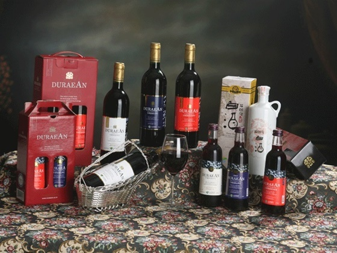

- 위스키
- 브랜디
- 보드카
브랜디
브랜디(brandy)는 과실을 발효한 술을 증류해서 만드는 증류주이다. 알콜도수는 약 35-60도이며 서구에서 식후주로 널리 소비된다. 과육을 쓰지 않고 과실의 껍질이나 압착 후의 찌꺼기를 사용한 증류주도 넓은 의미의 브랜디에 속한다. 또 봉밀주를 법적으로 과실주와 동등하게 취급하는 국가가 많은바, 이들 국가에서는 봉밀주를 증류한 증류주("허니잭")도 브랜디로 취급된다. 증류된 원주는 목통에 넣어 숙성시키거나 색소를 첨가하는 등의 후처리가 가해지기도 한다. 숙성하지 않은 브랜디는 오드비(eaux-de-vie)라고 부른다.
브랜디는 과실주를 소비하는 지역이라면 거의 모든 곳에서 생산된다. 가장 유명하고 인기 있는 브랜디는 남프랑스에서 만드는 코냑(Cognac)과 아르마냑(Armagnac)이다. 코냑과 아르마냑은 브랜디를 만드는 지방의 지명이면서 곧 해당 지방에서 만드는 브랜디의 이름이기도 하다.
